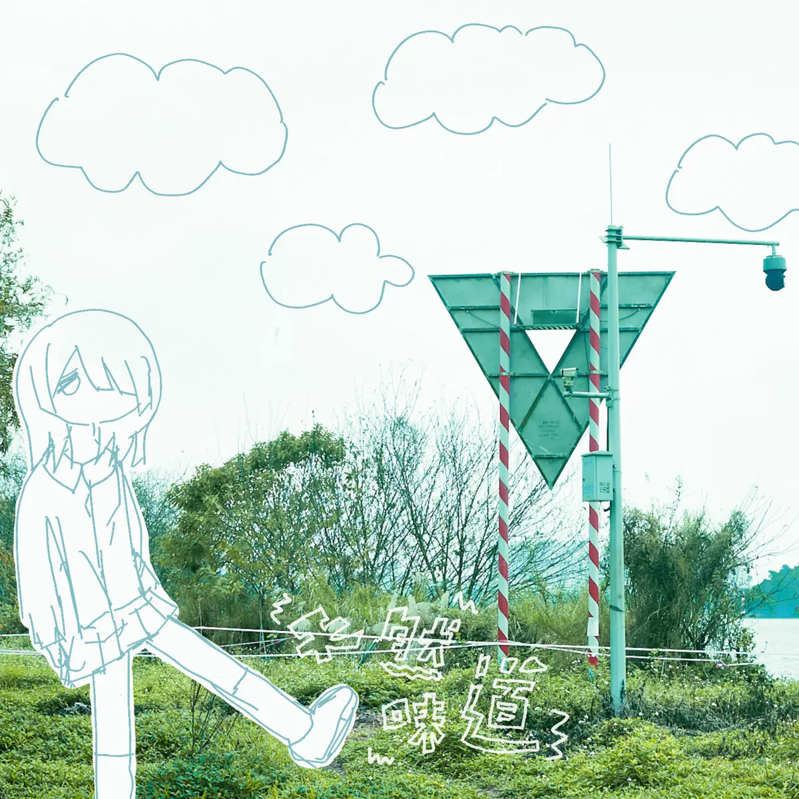

Album#22
少女终末旅行



{kind=link}
从 余日摇滚 Day 130 「顺」过来的一张专辑，是一张盯鞋专辑。
盯鞋、Shoegaze，是独立摇滚和替代摇滚的一个子流派，其特点是空灵的音景、模糊的人声，以及对吉他效果器和失真效果的大量使用，通常会营造出一种沉浸式的「音墙」。
该术语由音乐高管安迪·罗斯（Andy Ross）创造，后来被英国音乐媒体用来形容 Shoegaze 乐队在舞台上纹丝不动的表演风格，即乐手们在演出时总是低头盯着脚下的效果器踏板。
20 世纪 90 年代初，英国音乐媒体给伦敦俱乐部圈子里的 shoegaze 乐队及相关艺术家贴上了一个标签，称之为「自娱自乐的一群人」（The Scene That Celebrates Itself）。
我不喜欢很吵的音乐，但不知道为啥摇滚我却挺喜欢的，盯鞋这种类型还有很多噪音墙，说实话也挺吵的，但我也挺喜欢。
盯鞋这类音乐，乐队都沉浸在演奏中，我也会沉浸在他们的演奏里，迷失在他们的噪音墙里。透过音墙，往往主唱的声音也很好听，不知道是不是朦胧产生的美。
专辑名称「少女终末旅行」会让我想起同名动画 《少女终末旅行》，是一部我蛮喜欢的动画，讲述两个女孩在末日世界旅行的故事，当时看完了还有点难过。动画里的插曲也蛮好听的，比较喜欢「瞳ニ映ル景色」和「雨だれの歌」这两首。
天然味道和イルカポリス 海豚刑警 的声音也蛮像的，推荐听听他们的《BYE BYE LOVE》，也是我很喜欢的一张专辑。
专辑封面上的女孩，看起来是从纸上剪下来后贴上去的，刘海遮住了一只眼睛，看起来有点沮丧的样子。
专辑中曲子之间的过渡是连贯的，不仔细听的话，可能都不会意识到开始进入了下一首。
关于专辑介绍：
不知道为何，
大家都接受了暑假后世界就迎来终结的事实。
在房间中等待迎接自己生命尽头的少女，
被敲开心灵的蛋壳，
告别身边的一切，踏上了不知通往何处的旅途。
还未消失的太阳、将要横度的海洋、废弃的单车、与朋友们度过最后的 SummerSonic…
一个个闪烁不定的记忆，懵懂少女关于夏天的物语就要完结了。
也许对于过去最后的思念啊，也留在这里了。
——「少女终末旅行」
TRACKLIST
Yuck ByeBye
I look at your bright eyes
Falling down one night
What's behind this wall
I can't see ahead
What's behind this wall
I can't see ahead
Back to the soft shadows of the trees
Speaking to the sun
Light makes me sick
Moon is hazy at night
Walk quickly on the street
You may feel tired
It's time to leave
What's behind this wall
I can't see ahead
What's behind this wall
I can't see ahead
歌词大意
我看着你明亮的眼睛
在一夜之间坠落
这面墙的背后是什么
我看不到前方的路啊
这面墙的背后是什么
我看不到前方的路啊
回到柔和的树影下
在阳光下诉说着
光使我感到眩晕
月亮朦胧的晚上
快步走在街上
你也许感到疲倦了
你该离开了
这面墙的背后是什么
我看不到前方的路啊
这面墙的背后是什么
我看不到前方的路啊
天然味道
夜晚被风吹起
快速跑进草地里
亲吻我的猫咪
跑上坡再跑下去
空中的雨滴
是什么味道
没有人在意
缓慢的街上
柔软思绪
悄悄跑进心里
夜晚被风吹起
快速跑进草地里
亲吻我的猫咪
跑上坡再跑下去
空中的雨滴
是什么味道
没有人在意
缓慢的街上
柔软思绪
悄悄跑进心里
夏日祭、唯我一人
遥远的梦中啊
为何如此难触呢
想要逃出房间
走在傍晚车站
夏天的路上
我的心变成一片海洋
夏天的路上
我的心变成一片海洋
遥远的梦中啊
为何如此难触呢
想要逃出房间
走在傍晚车站
夏天的路上
我的心变成一片海洋
夏天的路上
我的心变成一片海洋
一个人的时候
无法往前走
交织的生活啊
说出来也是无用
如果说
见到你
一开始是比较喧闹的，「夏天的路上/我的心变成一片海洋」，大概是因为难过吧；在唱到「一个人的时候/无法往前走」，只剩下好听的吉他旋律作为伴奏，有种落寞的感觉；唱完「如果说/见到你」，噪音再次爆发，像是迫不及待想要见到对方的冲动、奋不顾身要去见对方的感觉。蛮喜欢的一首。
结合歌名，曲子会让我想到这样的场景：
开头的躁动，就像是热闹的夏日祭，但置身其中的自己却是孤单的，想见的人不在身边；走呀走，走到了一个相对安静的地方，更显落寞；最后下定决心要去见那个人，用尽全力向对方奔跑。
冬啊！
太阳消失在午间
我就被世界溶解
终于告别了
梦中的预言
埋在温暖的冬天
融化我
拥抱我
照亮我
坠入这一切
融化我
拥抱我
照亮我
柔和无尽的空间
太阳消失在午间
我就被世界溶解
终于告别了
梦中的预言
埋在温暖的冬天
融化我
拥抱我
照亮我
坠入这一切
融化我
拥抱我
照亮我
柔和无尽的空间
我间中仍会想我们会见面
在那间红磡近黄埔的商店
你若然还记得那诺言
曾说今天我们流浪到海边
你照片留在一封情信里面
每一天仍是照旧看它一遍
我仍然还记得那笑脸
曾在当天我们流浪到（游玩过）夏天
我都曾写你在每天的日记
但放弃你却像再没可能梦想
像一个沉闷的独唱
我都曾写你在每天的日记
但放弃你却像再没可能梦想
像失去甜蜜的合唱（像一个沉闷的独唱）
像失去甜蜜的合唱（像一个沉闷的独唱）
像失去甜蜜的合唱（像一个沉闷的独唱）
引用一下禹安的感受：
最后一首「冬啊！」，失真的少女声音浸泡在厚厚的吉他噪音里，悠然地向外面唱着有一半我没听懂的歌词和「拥抱我」，「照亮我」的话语，真棒，喜欢！
以「柔和无尽的空间」为分界线，后面静音了将近 5 分钟，然后进入了最后一段演奏，最后那段是 Hidden Track 吧，留给那些愿意等待的人听。
偶尔也会听到类似的歌曲，听着听着就没有声音了，有时在关心别的事情而没注意到，当旋律再次响起的时候，往往会感到一些意外和惊喜，甚至感动。
歌曲的最后一段唱的是粤语，悠悠地唱着，喜欢。